પૂર્ણાંક, સંમેય, અસંમેય અને વાસ્તવિક સંખ્યાઓ ઓળખવી
સંખ્યારેખા પર અપૂર્ણાંકનું સ્થાન દર્શાવવું
સંખ્યારેખા પર દશાંશનું સ્થાન દર્શાવવું
આ વિભાગના વિષયોનો વધુ વિગતવાર પરિચય પૂર્વબીજગણિત પુસ્તકનાં આ પ્રકરણોમાં મળે છે: દશાંશ અને વાસ્તવિક સંખ્યાઓના ગુણધર્મો.
વર્ગમૂળ ધરાવતી પદાવલીને સાદું રૂપ આપો
યાદ રાખો: જ્યારે સંખ્યા n ને તેના પોતાનાથી ગુણીએ, ત્યારે લખીએ અને તેને “nનો વર્ગ” વાંચીએ. મળતું પરિણામ કહેવાય છે વર્ગ; અહીં મૂળ સંખ્યા છે n. ઉદાહરણ તરીકે,
એ જ રીતે, 121 એ 11નો વર્ગ છે, કારણ કે નું મૂલ્ય 121 છે.
બે હરોળ અને 17 સ્તંભનું કોષ્ટક છે. પહેલી હરોળમાં ડાબેથી “સંખ્યા”, n અને 1થી 15 સુધીની સંખ્યાઓ છે. બીજી હરોળમાં “વર્ગ”, nનો વર્ગ અને પછી ખાલી ખાનાં છે; 8ની નીચે 64 અને 11ની નીચે 121 આપ્યાં છે. બાકીનાં જવાબનાં ખાનાં ખાલી છે.
બીજી હરોળની સંખ્યાઓને પૂર્ણવર્ગ સંખ્યાઓ કહે છે. પૂર્ણવર્ગ સંખ્યાઓ ઓળખતાં શીખવું ઉપયોગી થશે.
ગણતરીની સંખ્યાઓના વર્ગ ધન હોય છે. ઋણ સંખ્યાઓના વર્ગ વિશે શું કહી શકાય? આપણે જાણીએ છીએ કે બે સંખ્યાનાં ચિહ્નો સમાન હોય તો તેમનું ગુણનફળ ધન હોય છે. એટલે દરેક ઋણ સંખ્યાનો વર્ગ પણ ધન છે.
શું તમે જોયું કે આ વર્ગ અનુરૂપ ધન સંખ્યાઓના વર્ગ જેટલા જ છે?
ક્યારેક સંખ્યા અને તેના વર્ગ વચ્ચેનો સંબંધ ઊલટી દિશામાં જોવો પડે છે. કારણ કે એટલે આપણે 100ને 10નો વર્ગ કહીએ છીએ. આપણે એમ પણ કહીએ છીએ કે 10 એ 100નું વર્ગમૂળ છે. જે સંખ્યાનો વર્ગ હોય, તેને વર્ગમૂળ કહીએ છીએ; મૂળ હેઠળની સંખ્યા છે m.
સંખ્યાનું વર્ગમૂળ
જો તો n એ વર્ગમૂળ છે; મૂળ હેઠળની સંખ્યા છે m.
ધ્યાન આપો: પણ છે, એટલે પણ 100નું વર્ગમૂળ છે. એટલે 10 અને બંને 100નાં વર્ગમૂળ છે.
એટલે દરેક ધન સંખ્યાને બે વર્ગમૂળ હોય છે—એક ધન અને એક ઋણ. જો ફક્ત ધન સંખ્યાનું ધન વર્ગમૂળ જ જોઈએ તો શું કરવું? આ વર્ગમૂળ ચિહ્ન, ધન વર્ગમૂળ દર્શાવે છે. ધન વર્ગમૂળને કહે છે મુખ્ય વર્ગમૂળ. વર્ગમૂળ ચિહ્ન વાપરીએ ત્યારે હંમેશાં મુખ્ય વર્ગમૂળ જ દર્શાવીએ છીએ.
શૂન્યના વર્ગમૂળ માટે પણ વર્ગમૂળ ચિહ્ન વાપરીએ છીએ. કારણ કે ધ્યાન આપો: શૂન્યને ફક્ત એક જ વર્ગમૂળ છે.
વર્ગમૂળનાં ચિહ્નો
ને “mનું વર્ગમૂળ” વાંચીએ છીએ.
એક વર્ગમૂળ આપ્યું છે. એક તીર વર્ગમૂળ ચિહ્ન તરફ જાય છે અને તેનું નામ બતાવે છે; ચિહ્ન ખરાની નિશાની જેવું છે, જેના લાંબા છેડાથી આડી રેખા લંબાય છે. બીજું તીર ચિહ્નની અંદરની સંખ્યા તરફ જાય છે અને તેને “મૂળ હેઠળની સંખ્યા” કહે છે.
જો તો અહીં શરત છે:
સંખ્યા mનું વર્ગમૂળ, એ એવી અનઋણ સંખ્યા છે જેનો વર્ગ m હોય.
100નું મુખ્ય વર્ગમૂળ 10 હોવાથી લખીએ વર્ગમૂળ ઓળખવામાં મદદ મળે તે માટે નીચેનું કોષ્ટક પૂર્ણ કરો.
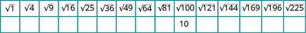
બે હરોળ અને 15 સ્તંભનું કોષ્ટક છે. પહેલી હરોળમાં અનુક્રમે 1, 4, 9, 16, 25, 36, 49, 64, 81, 100, 121, 144, 169, 196 અને 225નાં વર્ગમૂળ છે. બીજી હરોળમાં 100ના વર્ગમૂળની નીચે દસમા ખાનામાં 10 છે; બાકીનાં ખાનાં ખાલી છે.
સાદું રૂપ આપો: ⓐⓑ
ઉકેલ
ⓐ કારણ કે
ⓑ કારણ કે
સાદું રૂપ આપો: ⓐⓑ
ⓐ 6 ⓑ 13
સાદું રૂપ આપો: ⓐⓑ
ⓐ 4 ⓑ 14
આપણે જાણીએ છીએ કે દરેક ધન સંખ્યાને બે વર્ગમૂળ હોય છે અને વર્ગમૂળ ચિહ્ન ધન વર્ગમૂળ સૂચવે છે. આપણે લખીએ કોઈ સંખ્યાનું ઋણ વર્ગમૂળ શોધવા વર્ગમૂળ ચિહ્નની આગળ ઋણ ચિહ્ન મૂકીએ છીએ. ઉદાહરણ તરીકે, આપણે વાંચીએ ને “100ના વર્ગમૂળની વિરોધી સંખ્યા” તરીકે.
સાદું રૂપ આપો: ⓐⓑ
ઉકેલ
ⓐ ઋણ ચિહ્ન વર્ગમૂળ ચિહ્નની આગળ છે.
ⓑ ઋણ ચિહ્ન વર્ગમૂળ ચિહ્નની આગળ છે.
સાદું રૂપ આપો: ⓐⓑ
ⓐⓑ
સાદું રૂપ આપો: ⓐⓑ
ⓐⓑ
પૂર્ણાંક, સંમેય, અસંમેય અને વાસ્તવિક સંખ્યાઓ ઓળખો
અગાઉ આપણે સંખ્યાઓને આ પ્રકારોમાં વર્ણવી છે: ગણતરીની સંખ્યાઓ (અંગ્રેજી બહુવચન પ્રત્યય s), પૂર્ણ સંખ્યાઓ (અંગ્રેજી બહુવચન પ્રત્યય s), અને પૂર્ણાંકો. આ પ્રકારની સંખ્યાઓ વચ્ચે શું તફાવત છે?
બધા પૂર્ણાંકથી શરૂ કરીને તેમાં બધા અપૂર્ણાંક ઉમેરીએ તો કયા પ્રકારની સંખ્યાઓ મળે? આ સંખ્યાઓથી સંમેય સંખ્યાઓનો સમૂહ બને છે. એક સંમેય સંખ્યા એ એવી સંખ્યા છે જેને બે પૂર્ણાંકના ગુણોત્તર તરીકે લખી શકાય.
સંમેય સંખ્યા
એક સંમેય સંખ્યા એ આ સ્વરૂપની સંખ્યા છે: જ્યાં p અને q પૂર્ણાંક છે અને
સંમેય સંખ્યાને બે પૂર્ણાંકના ગુણોત્તર તરીકે લખી શકાય છે.
આવા બધા ધન કે ઋણ અપૂર્ણાંક: સંમેય સંખ્યાઓ છે. દરેકનો અંશ અને છેદ પૂર્ણાંક છે.
શું પૂર્ણાંક સંમેય સંખ્યાઓ છે? તે નક્કી કરવા પૂર્ણાંકને બે પૂર્ણાંકના ગુણોત્તર તરીકે લખવાનો પ્રયત્ન કરીએ. દરેક પૂર્ણાંકને ઘણી રીતે પૂર્ણાંકના ગુણોત્તર તરીકે લખી શકાય છે. ઉદાહરણ તરીકે, 3 સમાન છે
પૂર્ણાંકને પૂર્ણાંકના ગુણોત્તર તરીકે લખવાની સરળ રીત છે: એક છેદવાળા અપૂર્ણાંક તરીકે લખવો.
દરેક પૂર્ણાંકને બે પૂર્ણાંકના ગુણોત્તર તરીકે લખી શકાય છે, એટલે બધા પૂર્ણાંક સંમેય સંખ્યાઓ છે! યાદ રાખો: ગણતરીની સંખ્યાઓ અને પૂર્ણ સંખ્યાઓ પણ પૂર્ણાંક છે, એટલે તે પણ સંમેય છે.
દશાંશ વિશે શું કહી શકાય? શું તે સંમેય છે? થોડાં ઉદાહરણોને બે પૂર્ણાંકના ગુણોત્તર તરીકે લખી શકાય છે કે નહીં તે જોઈએ.
આપણે જોયું છે કે પૂર્ણાંક સંમેય સંખ્યાઓ છે. પૂર્ણાંક ને દશાંશ તરીકે લખી શકાય છે: એટલે સ્પષ્ટ છે કે કેટલાક દશાંશ સંમેય છે.
દશાંશ 7.3 વિશે વિચારો. શું તેને બે પૂર્ણાંકના ગુણોત્તર તરીકે લખી શકાય? 7.3નો અર્થ છે એટલે તેને અશુદ્ધ અપૂર્ણાંક તરીકે લખી શકીએ: એટલે 7.3 એ પૂર્ણાંક 73 અને 10નો ગુણોત્તર છે. તે સંમેય સંખ્યા છે.
સામાન્ય રીતે, અમુક અંકો પછી પૂરો થતો દરેક દશાંશ (જેમ કે 7.3 અથવા સંમેય સંખ્યા છે. દશાંશને મિશ્ર સંખ્યા તરીકે લખો.
બે પૂર્ણાંકના ગુણોત્તર તરીકે લખો: ⓐⓑ 7.31.
ઉકેલ
ⓐ તેને 1 છેદવાળા અપૂર્ણાંક તરીકે લખો.
ⓑ તેને મિશ્ર સંખ્યા તરીકે લખો. યાદ રાખો: 7 પૂર્ણ ભાગ છે અને દશાંશ ભાગ 0.31માં છેલ્લું સ્થાન શતાંશનું છે.
અશુદ્ધ અપૂર્ણાંકમાં ફેરવો.
એટલે આપણે જોઈએ છીએ કે અને 7.31 બંને સંમેય સંખ્યાઓ છે, કારણ કે તેમને બે પૂર્ણાંકના ગુણોત્તર તરીકે લખી શકાય છે.
બે પૂર્ણાંકના ગુણોત્તર તરીકે લખો: ⓐⓑ 3.57.
ⓐⓑ
બે પૂર્ણાંકના ગુણોત્તર તરીકે લખો: ⓐⓑ 8.41.
ⓐⓑ
આપણે જે સંખ્યાઓને સંમેય જાણીએ છીએ તેમના દશાંશ સ્વરૂપ જોઈએ.
આપણે જોયું છે કે દરેકપૂર્ણાંક સંમેય સંખ્યા છે, કારણ કે કોઈ પણ પૂર્ણાંક a માટે આ સાચું છે. દશાંશબિંદુ અને શૂન્ય ઉમેરીને કોઈ પણ પૂર્ણાંકને દશાંશ સ્વરૂપમાં પણ લખી શકીએ છીએ.
આપણે એ પણ જોયું છે કે દરેકઅપૂર્ણાંક સંમેય સંખ્યા છે. ઉપર લીધેલા અપૂર્ણાંકોનાં દશાંશ સ્વરૂપ જુઓ.
આ ઉદાહરણો આપણને શું જણાવે છે?
દરેક સંમેય સંખ્યાને પૂર્ણાંકોના ગુણોત્તર તરીકે લખી શકાય છે, જ્યાં p અને q પૂર્ણાંક છે અનેતેમ જ અંત આવતો હોય કે આવર્તન થતું હોય એવા દશાંશ સ્વરૂપમાં લખી શકાય છે.
ઉપર જોયેલી સંખ્યાઓ અહીં પૂર્ણાંકોના ગુણોત્તર અને દશાંશ સ્વરૂપમાં લખેલી છે:
અપૂર્ણાંકો
પૂર્ણાંકો
સંખ્યા
પૂર્ણાંકોનો ગુણોત્તર
દશાંશ સ્વરૂપ
સંમેય સંખ્યા
એક સંમેય સંખ્યા એ આ સ્વરૂપની સંખ્યા છે: જ્યાં p અને q પૂર્ણાંક છે અને
તેના દશાંશ સ્વરૂપનો અંત આવે છે અથવા તેમાં આવર્તન થાય છે.
શું એવી દશાંશ સંખ્યાઓ છે જેમનો અંત પણ ન આવે અને આવર્તન પણ ન થાય? હા!
સંખ્યા (ગ્રીક અક્ષર પાઈ, જેનો ઉચ્ચાર “પાઈ” થાય છે) વર્તુળોના વર્ણનમાં ખૂબ મહત્ત્વની છે. તેના દશાંશ સ્વરૂપનો અંત આવતો નથી અને આવર્તન પણ થતું નથી.
આપણે અંત ન આવે અને આવર્તન ન થાય એવી દશાંશ રચના પણ બનાવી શકીએ છીએ, જેમ કે
જે સંખ્યાઓના દશાંશ સ્વરૂપનો અંત આવતો નથી અને આવર્તન પણ થતું નથી, તેમને બે પૂર્ણાંકોના અપૂર્ણાંક તરીકે લખી શકાતી નથી. આવી સંખ્યાઓને અસંમેય સંખ્યાઓ કહીએ છીએ.
અસંમેય સંખ્યા
એક અસંમેય સંખ્યા એ એવી સંખ્યા છે જેને બે પૂર્ણાંકોના ગુણોત્તર તરીકે લખી શકાતી નથી.
તેના દશાંશ સ્વરૂપનો અંત આવતો નથી અને આવર્તન પણ થતું નથી.
સંખ્યા સંમેય છે કે અસંમેય તે નક્કી કરવાની રીતનો સાર જોઈએ.
સંમેય કે અસંમેય?
જો કોઈ સંખ્યાના દશાંશ સ્વરૂપમાં
આવર્તન થાય છે અથવા તેનો અંત આવે છે, તો તે સંખ્યા સંમેય છે.
આવર્તન થતું નથી અને તેનો અંત પણ આવતો નથી, તો તે સંખ્યા અસંમેય છે.
ⓑ યાદ રાખો કે અને એટલે 44 પૂર્ણ વર્ગ નથી. તેથી ના દશાંશ સ્વરૂપમાં આવર્તન ક્યારેય થતું નથી અને તેનો અંત પણ આવતો નથી. એટલે અસંમેય છે.
આપેલી દરેક સંખ્યા સંમેય છે કે અસંમેય તે જણાવો: ⓐⓑ
ⓐ સંમેય છે ⓑ અસંમેય છે
આપેલી દરેક સંખ્યા સંમેય છે કે અસંમેય તે જણાવો: ⓐⓑ
ⓐ અસંમેય છે ⓑ સંમેય છે
આપણે જોયું છે કે બધી ગણતરીની સંખ્યાઓ પૂર્ણ સંખ્યાઓ છે, બધી પૂર્ણ સંખ્યાઓ પૂર્ણાંક છે અને બધા પૂર્ણાંક સંમેય સંખ્યાઓ છે. અસંમેય સંખ્યાઓના દશાંશ સ્વરૂપનો અંત આવતો નથી અને તેમાં આવર્તન પણ થતું નથી. સંમેય અને અસંમેય સંખ્યાઓને ભેગી કરતાં આપણને મળતો સમૂહ છે વાસ્તવિક સંખ્યાઓ.
વાસ્તવિક સંખ્યા
એક વાસ્તવિક સંખ્યા એ એવી સંખ્યા છે જે સંમેય અથવા અસંમેય હોય છે.
પ્રારંભિક બીજગણિતમાં આપણે વાપરીએ છીએ તે બધી સંખ્યાઓ વાસ્તવિક સંખ્યાઓ છે. આકૃતિ 001 માં આ વિભાગમાં ચર્ચેલા સંખ્યાસમૂહો એકબીજા સાથે કેવી રીતે સંબંધિત છે તે દર્શાવ્યું છે.
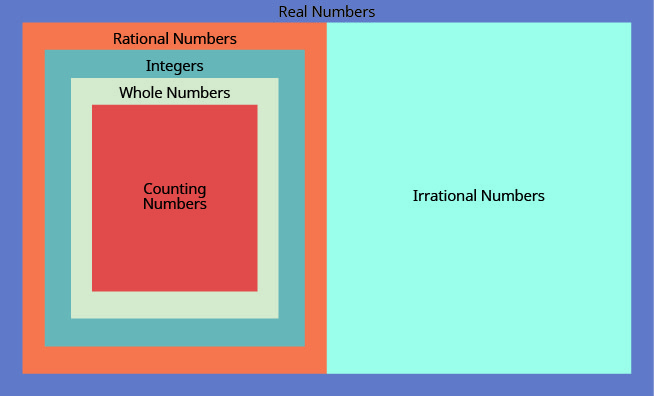
વાસ્તવિક સંખ્યાઓનો મોટો વાદળી લંબચોરસ છે. અંદર ડાબે નારંગી ભાગ સંમેય સંખ્યાઓનો અને જમણે આછો લીલો-વાદળી ભાગ અસંમેય સંખ્યાઓનો છે. સંમેય સંખ્યાઓની અંદર પૂર્ણાંકોનો લંબચોરસ, તેની અંદર પૂર્ણ સંખ્યાઓનો અને તેની અંદર લાલ રંગનો ગણતરીની સંખ્યાઓનો લંબચોરસ છે. આકૃતિમાં આ સમૂહોનાં નામ છે; ઉદાહરણ સંખ્યાઓની યાદી છાપેલી નથી.
આ આલેખ વાસ્તવિક સંખ્યાઓનો સમૂહ બનાવતા સંખ્યાસમૂહો દર્શાવે છે. શું તમને “વાસ્તવિક સંખ્યાઓ” શબ્દપ્રયોગ અજાણ્યો લાગે છે? શું “વાસ્તવિક” ન હોય એવી સંખ્યાઓ છે? જો હોય, તો તે કેવી હોઈ શકે?
શું આનું સાદું રૂપ આપી શકીએ: શું એવી કોઈ સંખ્યા છે જેનો વર્ગ આ હોય:
અત્યાર સુધી આપણે જે સંખ્યાઓ જોઈ છે તેમાંની કોઈનો વર્ગ આ નથી: કેમ? કોઈ પણ ધન સંખ્યાનો વર્ગ ધન હોય છે. કોઈ પણ ઋણ સંખ્યાનો વર્ગ પણ ધન હોય છે. તેથી આની બરાબર કોઈ વાસ્તવિક સંખ્યા નથી:
ઋણ સંખ્યાનું વર્ગમૂળ વાસ્તવિક સંખ્યા નથી.
આપેલી દરેક સંખ્યા વાસ્તવિક સંખ્યા છે કે વાસ્તવિક સંખ્યા નથી તે જણાવો: ⓐⓑ
ઉકેલ
ⓐ એવી કોઈ વાસ્તવિક સંખ્યા નથી જેનો વર્ગ આ હોય: તેથી વાસ્તવિક સંખ્યા નથી.
ⓑ ઋણ ચિહ્ન વર્ગમૂળચિહ્નની બહાર હોવાથી, એટલે કારણ કે વાસ્તવિક સંખ્યા છે, વાસ્તવિક સંખ્યા છે.
આપેલી દરેક સંખ્યા વાસ્તવિક સંખ્યા છે કે વાસ્તવિક સંખ્યા નથી તે જણાવો: ⓐⓑ
ⓐ વાસ્તવિક સંખ્યા નથી ⓑ વાસ્તવિક સંખ્યા
આપેલી દરેક સંખ્યા વાસ્તવિક સંખ્યા છે કે વાસ્તવિક સંખ્યા નથી તે જણાવો: ⓐⓑ
ⓐ યાદ રાખો: પૂર્ણ સંખ્યાઓ એટલે 0, 1, 2, 3, …; અહીં આપેલી સંખ્યાઓમાં માત્ર 8 જ પૂર્ણ સંખ્યા છે.
ⓑ પૂર્ણ સંખ્યાઓ, તેમની વિરોધી સંખ્યાઓ અને 0 પૂર્ણાંક છે. તેથી પૂર્ણ સંખ્યા 8 પૂર્ણાંક છે, અને પૂર્ણ સંખ્યાની વિરોધી સંખ્યા હોવાથી તે પણ પૂર્ણાંક છે. વળી, 64 એ 8નો વર્ગ છે, એટલે તેથી પૂર્ણાંક છે
ⓒ બધા પૂર્ણાંક સંમેય હોવાથી, સંમેય છે. સંમેય સંખ્યાઓમાં અપૂર્ણાંકો અને અંત આવતો હોય કે આવર્તન થતું હોય એવી દશાંશ સંખ્યાઓ પણ આવે છે. એટલે સંમેય છે. તેથી સંમેય સંખ્યાઓની યાદી છે
અગાઉ આપણે સંખ્યારેખા જોઈ ત્યારે તેના પર ધન પૂર્ણાંક, ઋણ પૂર્ણાંક અને શૂન્ય હતા. હવે આપણે તેના પર અપૂર્ણાંક અને દશાંશ સંખ્યાઓ પણ દર્શાવીશું.
“સંખ્યારેખા, ભાગ 3” નામની સાધનો વડે ગણિતની પ્રવૃત્તિ કરવાથી સંખ્યારેખા પર અપૂર્ણાંકોનાં સ્થાન વધુ સારી રીતે સમજવામાં મદદ મળશે.
અપૂર્ણાંકોથી શરૂઆત કરીને આ સંખ્યાઓ દર્શાવીએ: સંખ્યારેખા પર.
સૌથી સરળ હોવાથી પહેલાં આ પૂર્ણાંકોનાં સ્થાન દર્શાવીએ: અને જુઓ આકૃતિ 002.
અહીં શુદ્ધ અપૂર્ણાંકો છે આપણે જાણીએ છીએ કે શુદ્ધ અપૂર્ણાંક ની કિંમત એક કરતાં ઓછી છે, તેથી તે આ બે સંખ્યાઓ વચ્ચે આવશે: છેદ 5 હોવાથી 0થી 1 સુધીના એકમ અંતરને 5 સરખા ભાગમાં વહેંચીએ છીએ. આપણે દર્શાવીએ છીએ: જુઓ આકૃતિ 002.
આ જ રીતે, માટે છેડાની સંખ્યાઓ છે 0 અને એકમ અંતરને 5 સરખા ભાગમાં વહેંચ્યા પછી દર્શાવીએ: જુઓ આકૃતિ 002.
અંતે જુઓ અશુદ્ધ અપૂર્ણાંકો આ અપૂર્ણાંકોમાં અંશ છેદ કરતાં મોટો છે. દરેકને મિશ્ર સંખ્યામાં ફેરવવાથી આ બિંદુઓનાં સ્થાન દર્શાવવું સરળ બની શકે છે. જુઓ આકૃતિ 002.
આકૃતિ 002 માં બધાં બિંદુઓ દર્શાવેલી સંખ્યારેખા છે.
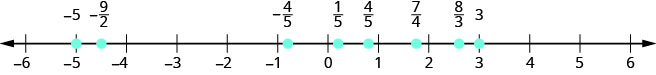
સંખ્યારેખા −6થી 6 સુધી છે. ડાબેથી જમણે આઠ બિંદુઓ છે: −5, −9/2, −4/5, 1/5, 4/5, 7/4, 8/3 અને 3. −9/2 એ −5 અને −4ની બરાબર વચ્ચે છે. −4/5 એ −1ની થોડે જમણે છે. 1/5 એ 0ની થોડે જમણે અને 4/5 એ 1ની થોડે ડાબે છે. 7/4 એ 1 અને 2ની વચ્ચે, 2ની વધુ નજીક છે. 8/3 એ 2 અને 3ની વચ્ચે, 3ની વધુ નજીક છે. મૂળ સૂચિમાં ન હોય તેવું વધારાનું 4/5 બિંદુ પણ આકૃતિમાં છે.
સંખ્યારેખા પર નીચેની સંખ્યાઓનાં સ્થાન દર્શાવી તેમનાં નામ લખો:
ઉકેલ
આ પૂર્ણાંકોનાં સ્થાન શોધીને દર્શાવો:
પહેલાં શુદ્ધ અપૂર્ણાંક નું સ્થાન શોધો. અપૂર્ણાંક એ 0 અને 1ની વચ્ચે છે. 0થી 1 સુધીના અંતરને ચાર સરખા ભાગમાં વહેંચીને દર્શાવીએ: આ જ રીતે દર્શાવો:
હવે આ અશુદ્ધ અપૂર્ણાંકોનાં સ્થાન શોધો: તેમને મિશ્ર સંખ્યામાં ફેરવીને ઉપર સમજાવેલી રીતે દર્શાવવાનું વધુ સરળ છે:
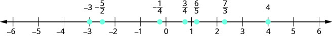
સંખ્યારેખા −6થી 6 સુધી છે. ડાબેથી જમણે દર્શાવેલી સંખ્યાઓ −3, −5/2, −1/4, 3/4, 6/5, 7/3 અને 4 છે. −5/2 એ −3 અને −2ની બરાબર વચ્ચે છે. −1/4 એ 0ની થોડે ડાબે છે. 3/4 એ 1ની થોડે ડાબે છે. 6/5 એ 1ની થોડે જમણે છે. 7/3 એ 2 અને 3ની વચ્ચે, પણ 2ની વધુ નજીક છે.
સંખ્યારેખા પર નીચેની સંખ્યાઓનાં સ્થાન દર્શાવી તેમનાં નામ લખો:
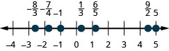
સંખ્યારેખા −4થી 5 સુધી છે. ડાબેથી જમણે દર્શાવેલી સંખ્યાઓ −8/3, −7/4, −1, 1/3, 6/5, 9/2 અને 5 છે. −8/3 એ −3 અને −2ની વચ્ચે, પણ −3ની વધુ નજીક છે. −7/4 એ −2ની થોડે જમણે છે. 1/3 એ 0ની થોડે જમણે છે. 6/5 એ 1ની થોડે જમણે છે. 9/2 એ 4 અને 5ની બરાબર વચ્ચે છે.
સંખ્યારેખા પર નીચેની સંખ્યાઓનાં સ્થાન દર્શાવી તેમનાં નામ લખો:
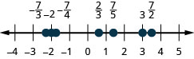
સંખ્યારેખા −4થી 5 સુધી છે. ડાબેથી જમણે દર્શાવેલી સંખ્યાઓ −7/3, −2, −7/4, 2/3, 7/5, 3 અને 7/2 છે. −7/3 એ −3 અને −2ની વચ્ચે, પણ −2ની વધુ નજીક છે. −7/4 એ −2ની થોડે જમણે છે. 2/3 એ 1ની થોડે ડાબે છે. 7/5 એ 1 અને 2ની વચ્ચે, પણ 1ની વધુ નજીક છે. 7/2 એ 3 અને 4ની બરાબર વચ્ચે છે.
ઉદાહરણ ઉદાહરણ fs-id1170654942212માં અપૂર્ણાંકોને ક્રમમાં ગોઠવવા અસમાનતાનાં ચિહ્નો વાપરીશું. અગાઉનાં પ્રકરણોમાં સંખ્યાઓને ક્રમમાં ગોઠવવા સંખ્યારેખાનો ઉપયોગ કર્યો હતો.
a < b એટલે “a એ b કરતાં નાનું છે”; ત્યારે સંખ્યારેખા પર aનું સ્થાન bની ડાબે હોય છે.
a > b એટલે “a એ b કરતાં મોટું છે”; ત્યારે સંખ્યારેખા પર aનું સ્થાન bની જમણે હોય છે.
સંખ્યારેખા પર ડાબેથી જમણે જતાં સંખ્યાઓની કિંમત વધે છે.
નીચેની દરેક સંખ્યાજોડીને < અથવા > વડે ક્રમમાં ગોઠવો. આનો સંદર્ભ ઉપયોગી થઈ શકે છે: આકૃતિ 006.
ⓐⓑⓒⓓ
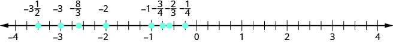
સંખ્યારેખા −4થી 4 સુધી છે. ડાબેથી જમણે દર્શાવેલી સંખ્યાઓ −3 પૂર્ણ 1/2, −3, −8/3, −2, −1, −3/4, −2/3 અને −1/4 છે. −3 પૂર્ણ 1/2 એ −4 અને −3ની વચ્ચે છે. −8/3 એ −3 અને −2ની વચ્ચે, પણ −3ની વધુ નજીક છે. −3/4, −2/3 અને −1/4 બધી −1 અને 0ની વચ્ચે છે.
ઉકેલ
ⓐ નું સ્થાન ની જમણે છે, સંખ્યારેખા પર.
ⓑ નું સ્થાન ની ડાબે છે, સંખ્યારેખા પર.
ⓒ નું સ્થાન ની ડાબે છે, સંખ્યારેખા પર.
ⓓ નું સ્થાન ની જમણે છે, સંખ્યારેખા પર.
નીચેની દરેક સંખ્યાજોડીને < અથવા > વડે ક્રમમાં ગોઠવો:
ⓐⓑⓒⓓ
ⓐ > ⓑ > ⓒ < ⓓ <
નીચેની દરેક સંખ્યાજોડીને < અથવા > વડે ક્રમમાં ગોઠવો:
ⓐⓑⓒⓓ
ⓐ < ⓑ < ⓒ > ⓓ <
સંખ્યારેખા પર દશાંશ સંખ્યાઓ દર્શાવો
અહીં લીધેલી સમાપ્ત દશાંશ સંખ્યાઓ અપૂર્ણાંકનાં સ્વરૂપ હોવાથી તેમને સંખ્યારેખા પર દર્શાવવાની રીત અપૂર્ણાંકોને દર્શાવવા જેવી છે.
સંખ્યારેખા પર 0.4 દર્શાવો.
ઉકેલ
શુદ્ધ અપૂર્ણાંકની કિંમત એક કરતાં ઓછી હોય છે. દશાંશ સંખ્યા 0.4નું સમ અપૂર્ણાંક સ્વરૂપ છે જે શુદ્ધ અપૂર્ણાંક છે, એટલે 0.4 એ 0 અને 1ની વચ્ચે છે. સંખ્યારેખા પર 0થી 1 સુધીના અંતરને 10 સરખા ભાગમાં વહેંચો. હવે ભાગો પાસે 0.1, 0.2, 0.3, 0.4, 0.5, 0.6, 0.7, 0.8, 0.9, 1.0 લખો. બધી સંખ્યાઓ દશાંશ સુધી એકસરખી રીતે લખવા 0ને 0.0 અને 1ને 1.0 લખીએ છીએ. અંતે સંખ્યારેખા પર 0.4 ચિહ્નિત કરો. જુઓ આકૃતિ 007.
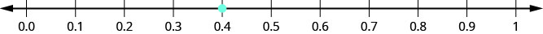
સંખ્યારેખા 0.0થી 1 સુધી છે. દર્શાવેલું એકમાત્ર બિંદુ 0.4 છે, જે 0.3 અને 0.5ની વચ્ચે છે.
સંખ્યારેખા પર દર્શાવો: 0.6.
સંખ્યારેખા 0.0થી 1 સુધી છે. દર્શાવેલું એકમાત્ર બિંદુ 0.6 છે, જે 0.5 અને 0.7ની વચ્ચે છે.
સંખ્યારેખા પર દર્શાવો: 0.9.
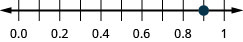
સંખ્યારેખા 0.0થી 1 સુધી છે. દર્શાવેલું એકમાત્ર બિંદુ 0.9 છે, જે 0.8 અને 1ની વચ્ચે છે.
દર્શાવો: સંખ્યારેખા પર.
ઉકેલ
દશાંશ સંખ્યા નું સમ અપૂર્ણાંક સ્વરૂપ છે એટલે તેને દર્શાવવા લેવાતા અંતરના છેડા છે 0 અને સંખ્યારેખા પર શતાંશના ભાગ પાડીને તેમના અંક લખો. અંતર લો 0થી જુઓ આકૃતિ 010.
સંખ્યારેખા −1.00થી 0.00 સુધી છે. દર્શાવેલું એકમાત્ર બિંદુ −0.74 છે, જે −0.8 અને −0.7ની વચ્ચે છે.
સંખ્યારેખા પર દર્શાવો:
સંખ્યારેખા −1.00થી 0.00 સુધી છે. દર્શાવેલું એકમાત્ર બિંદુ −0.6 છે, જે −0.8 અને −0.4ની વચ્ચે છે.
સંખ્યારેખા પર દર્શાવો:
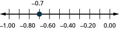
સંખ્યારેખા −1.00થી 0.00 સુધી છે. દર્શાવેલું એકમાત્ર બિંદુ −0.7 છે, જે −0.8 અને −0.6ની વચ્ચે છે.
કઈ સંખ્યા મોટી છે, 0.04 કે 0.40? પૈસાના સંદર્ભમાં વિચારીએ તો $0.40 (ચાલીસ સેન્ટ) એ $0.04 (ચાર સેન્ટ) કરતાં વધુ છે. એટલે,
અહીં પણ સંખ્યાઓને ક્રમમાં ગોઠવવા સંખ્યારેખા વાપરી શકીએ છીએ.
a < b એટલે “a એ b કરતાં નાનું છે”; ત્યારે સંખ્યારેખા પર aનું સ્થાન bની ડાબે હોય છે.
a > b એટલે “a એ b કરતાં મોટું છે”; ત્યારે સંખ્યારેખા પર aનું સ્થાન bની જમણે હોય છે.
સંખ્યારેખા પર 0.04 અને 0.40 ક્યાં છે? જુઓ આકૃતિ 013.
સંખ્યારેખા 0.0થી 1.0 સુધી છે. ડાબેથી જમણે 0.04 અને 0.4 બિંદુઓ ચિહ્નિત છે. 0.04 બિંદુ 0.0 અને 0.1ની વચ્ચે છે. 0.4 બિંદુ 0.3 અને 0.5ની વચ્ચે છે.
આપણે જોઈએ છીએ કે સંખ્યારેખા પર 0.40 એ 0.04ની જમણે છે. 0.40 > 0.04 દર્શાવવાની આ બીજી રીત છે.
0.31 અને 0.308ની સરખામણી કેવી રીતે થાય? પૈસાના સંદર્ભમાં ફેરવવાથી આ સરખામણી સરળ બનતી નથી. પરંતુ 0.31 અને 0.308ને અપૂર્ણાંકમાં ફેરવીને કઈ સંખ્યા મોટી છે તે જાણી શકીએ છીએ.
0.31
0.308
અપૂર્ણાંકમાં ફેરવો.
તેમની સરખામણી કરવા સામાન્ય છેદ જોઈએ.
ગાણિતિક પદાવલી (31 · 10)/(100 · 10) દર્શાવે છે કે અંશ અને છેદ બંનેને 10 વડે ગુણેલા છે. બંને સ્થાને ફક્ત “· 10” લાલ છે; 31 અને 100 કાળા છે.
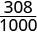
ગાણિતિક અપૂર્ણાંક 308/1000 એટલે ત્રણસો આઠ સહસ્રાંશ.
310 > 308 હોવાથી, આપણે જાણીએ છીએ કે તેથી 0.31 > 0.308.
0.31ને અપૂર્ણાંકમાં ફેરવતાં આપણે શું કર્યું તે જુઓ: આ અપૂર્ણાંકથી શરૂઆત કરી અને અંતે સમ અપૂર્ણાંક મળ્યો આ અપૂર્ણાંકને ફરી દશાંશમાં ફેરવતાં 0.310 મળે છે. એટલે 0.31 અને 0.310 સમ છે. દશાંશ સંખ્યાના અંતે શૂન્ય લખવાથી તેની કિંમત બદલાતી નથી!
આપણે 0.31 અને 0.310ને કહીએ છીએ સમ દશાંશ સંખ્યાઓ.
સમ દશાંશ સંખ્યાઓ
બે દશાંશ સંખ્યાઓને અપૂર્ણાંકમાં ફેરવતાં સમ અપૂર્ણાંક મળે તો તે દશાંશ સંખ્યાઓ સમ છે.
દશાંશ સંખ્યાઓને ક્રમમાં ગોઠવવાનાં પગલાં અહીં સંક્ષેપમાં આપેલાં છે.
દશાંશ સંખ્યાઓને ક્રમમાં ગોઠવો.
દશાંશબિંદુઓ એકની નીચે એક આવે તેમ સંખ્યાઓ લખો.
બંને સંખ્યાઓમાં દશાંશબિંદુ પછીનાં સ્થાનોની સંખ્યા સરખી છે કે નહીં તે તપાસો. સરખી ન હોય તો ઓછાં દશાંશસ્થાનોવાળી સંખ્યાના અંતે શૂન્ય લખીને સરખી કરો.
બંને દશાંશબિંદુ દૂર કરતાં મળતા પૂર્ણાંકોની સરખામણી કરો; ઋણ ચિહ્નો જાળવો.
યોગ્ય અસમાનતા ચિહ્ન વડે સંખ્યાઓને ક્રમમાં ગોઠવો.
ક્રમમાં ગોઠવો: વાપરો અથવા
ઉકેલ
દશાંશબિંદુઓ એકની નીચે એક આવે તેમ સંખ્યાઓ લખો.
0.6ના અંતે એક શૂન્ય ઉમેરીને દશાંશબિંદુ પછી 2 સ્થાનવાળી સંખ્યા બનાવો.
હવે બંને શતાંશ સ્વરૂપમાં છે.
64 એ 60 કરતાં મોટું છે.
64 શતાંશ એ 60 શતાંશ કરતાં વધુ છે.
નીચેની દરેક સંખ્યાજોડીને ક્રમમાં ગોઠવવા વાપરો
>
નીચેની દરેક સંખ્યાજોડીને ક્રમમાં ગોઠવવા વાપરો
>
ક્રમમાં ગોઠવો: વાપરો અથવા
ઉકેલ
દશાંશબિંદુઓ એકની નીચે એક આવે તેમ સંખ્યાઓ લખો.
બંનેમાં અંકોની સંખ્યા સરખી નથી.
0.83ના અંતે એક શૂન્ય લખો.
કારણ કે , એટલે 830 સહસ્રાંશ એ 803 સહસ્રાંશ કરતાં વધુ છે.
નીચેની સંખ્યાજોડીને ક્રમમાં ગોઠવવા વાપરો
>
નીચેની સંખ્યાજોડીને ક્રમમાં ગોઠવવા વાપરો
<
ઋણ દશાંશ સંખ્યાઓને ક્રમમાં ગોઠવતી વખતે ઋણ પૂર્ણાંકોને ક્રમમાં ગોઠવવાની રીત યાદ રાખવી જરૂરી છે. યાદ રાખો કે સંખ્યારેખા પર મોટી સંખ્યા જમણે હોય છે. ઉદાહરણ તરીકે, નું સ્થાન ની જમણે છે, તેથી આ જ રીતે, નાની સંખ્યા સંખ્યારેખા પર ડાબે હોય છે. ઉદાહરણ તરીકે, નું સ્થાન ની ડાબે છે, તેથી જુઓ આકૃતિ 015.
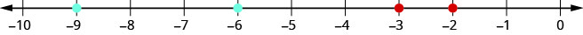
સંખ્યારેખા −10થી 0 સુધી છે અને દરેક પૂર્ણાંક પાસે આંક છે. −9 અને −6 પર આછાં લીલાં-વાદળી બિંદુઓ છે; −3 અને −2 પર લાલ બિંદુઓ છે. −2નું સ્થાન −3ની જમણે છે અને −9નું સ્થાન −6ની ડાબે છે.
જો આપણે 0 અને વચ્ચેનો ભાગ મોટો કરીને જોઈએ, જેમ કે દર્શાવ્યું છે ઉદાહરણ fs-id1170655062741માં, તો આ જ રીતે જોઈ શકીએ કે
વાપરો અથવા અને ક્રમમાં ગોઠવો:
ઉકેલ
દશાંશબિંદુઓ એકની નીચે એક આવે તેમ સંખ્યાઓ લખો.
બંનેમાં અંકોની સંખ્યા સરખી છે.
કારણ કે , એટલે −1 દશાંશ એ −8 દશાંશ કરતાં વધુ છે.
નીચેની સંખ્યાજોડીને < અથવા > વડે ક્રમમાં ગોઠવો:
>
નીચેની સંખ્યાજોડીને < અથવા > વડે ક્રમમાં ગોઠવો:
>
મુખ્ય વિચારો
વર્ગમૂળનાં ચિહ્નો
ને વાંચીએ “mનું વર્ગમૂળ”. જો તો અહીં શરત છે:
દશાંશ સંખ્યાઓને ક્રમમાં ગોઠવો
દશાંશબિંદુઓ એકની નીચે એક આવે તેમ સંખ્યાઓ લખો.
બંને સંખ્યાઓમાં દશાંશબિંદુ પછીનાં સ્થાનોની સંખ્યા સરખી છે કે નહીં તે તપાસો. સરખી ન હોય તો ઓછાં દશાંશસ્થાનોવાળી સંખ્યાના અંતે શૂન્ય લખીને સરખી કરો.
બંને દશાંશબિંદુ દૂર કરતાં મળતા પૂર્ણાંકોની સરખામણી કરો; ઋણ ચિહ્નો જાળવો.
યોગ્ય અસમાનતા ચિહ્ન વડે સંખ્યાઓને ક્રમમાં ગોઠવો.
અભ્યાસથી નિપુણતા
વર્ગમૂળ ધરાવતી પદાવલીને સાદું રૂપ આપો
નીચેના અભ્યાસોમાં સાદું રૂપ આપો.
6
8
3
10
પૂર્ણાંક, સંમેય, અસંમેય અને વાસ્તવિક સંખ્યાઓ ઓળખો
નીચેના અભ્યાસોમાં બે પૂર્ણાંકોના ગુણોત્તર તરીકે લખો.
સંખ્યારેખા 0થી 6 સુધી છે. ડાબેથી જમણે બિંદુઓ 3/4, 8/5 અને 10/3 છે. 3/4નું બિંદુ 0 અને 1ની વચ્ચે, 8/5નું બિંદુ 1 અને 2ની વચ્ચે અને 10/3નું બિંદુ 3 અને 4ની વચ્ચે છે.
સંખ્યારેખા 0થી 6 સુધી છે. ડાબેથી જમણે બિંદુઓ 3/10, 11/6, 7/2 અને 4 છે. 3/10નું બિંદુ 0 અને 1ની વચ્ચે, 11/6નું બિંદુ 1 અને 2ની વચ્ચે અને 7/2નું બિંદુ 3 અને 4ની વચ્ચે છે.
સંખ્યારેખા −1થી 1 સુધી છે. ડાબેથી જમણે બિંદુઓ −2/5 અને 2/5 છે. −2/5નું બિંદુ −1 અને 0ની વચ્ચે છે; 2/5નું બિંદુ 0 અને 1ની વચ્ચે છે.
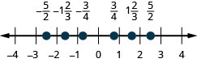
સંખ્યારેખા −4થી 4 સુધી છે. ડાબેથી જમણે બિંદુઓ −5/2, −1 પૂર્ણ 2/3, −3/4, 3/4, 1 પૂર્ણ 2/3 અને 5/2 છે. −5/2નું બિંદુ −3 અને −2ની વચ્ચે છે. −1 પૂર્ણ 2/3નું બિંદુ −2 અને −1ની વચ્ચે છે. −3/4નું બિંદુ −1 અને 0ની વચ્ચે છે. 3/4નું બિંદુ 0 અને 1ની વચ્ચે છે. 1 પૂર્ણ 2/3નું બિંદુ 1 અને 2ની વચ્ચે છે. 5/2નું બિંદુ 2 અને 3ની વચ્ચે છે.
નીચેના અભ્યાસોમાં દરેક સંખ્યાજોડીને < અથવા > વડે ક્રમમાં ગોઠવો.
<
>
>
<
સંખ્યારેખા પર દશાંશ સંખ્યાઓ દર્શાવો. નીચેના અભ્યાસોમાં સંખ્યારેખા પર સંખ્યા દર્શાવો.
0.8
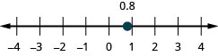
સંખ્યારેખા −4થી 4 સુધી છે. 0.8નું બિંદુ 0 અને 1ની વચ્ચે છે.
સંખ્યારેખા −4થી 4 સુધી છે. −1.6નું બિંદુ −2 અને −1ની વચ્ચે છે.
3.1
નીચેના અભ્યાસોમાં દરેક સંખ્યાજોડીને < અથવા > વડે ક્રમમાં ગોઠવો.
<
>
<
<
રોજિંદા જીવનમાં ગણિત
શૈક્ષણિક પ્રવાસ: લિંકન પ્રાથમિક શાળાના ધોરણ 5ના બધા વિદ્યાર્થીઓ વિજ્ઞાન સંગ્રહાલયના પ્રવાસે જશે. બાળકો, શિક્ષકો અને સાથે જતાં દેખરેખ રાખનારાં પુખ્તો મળીને કુલ 147 લોકો હશે. દરેક બસમાં 44 લોકો બેસી શકે છે.
ⓐ કેટલી બસની જરૂર પડશે? ⓑ જવાબ પૂર્ણ સંખ્યા જ કેમ હોવો જોઈએ? ⓒ ચોક્કસ જવાબની સૌથી નજીકની પૂર્ણ સંખ્યા પસંદ કરવાની સામાન્ય રીત અહીં કેમ ન વાપરવી જોઈએ?
ⓐ 4 બસ ⓑ જવાબો જુદા હોઈ શકે છે ⓒ જવાબો જુદા હોઈ શકે છે
બાળસંભાળ: સેરેના પરવાનાપ્રાપ્ત બાળસંભાળ કેન્દ્ર ખોલવા માગે છે. તેના રાજ્યના નિયમ મુજબ દરેક શિક્ષક દીઠ વધુમાં વધુ 12 બાળકો હોવાં જોઈએ. તે પોતાના કેન્દ્રમાં 40 બાળકોની સંભાળ રાખવા માગે છે.
ⓐ કેટલા શિક્ષકોની જરૂર પડશે?
ⓑ જવાબ પૂર્ણ સંખ્યા જ કેમ હોવો જોઈએ?
ⓒ ચોક્કસ જવાબની સૌથી નજીકની પૂર્ણ સંખ્યા પસંદ કરવાની સામાન્ય રીત અહીં કેમ ન વાપરવી જોઈએ?
લેખન અભ્યાસ
સંમેય સંખ્યા અને અસંમેય સંખ્યા વચ્ચેનો તફાવત તમારા શબ્દોમાં સમજાવો.
જવાબો જુદા હોઈ શકે છે
સંખ્યાસમૂહો (ગણતરીની સંખ્યાઓ, પૂર્ણ સંખ્યાઓ, પૂર્ણાંક, સંમેય, અસંમેય અને વાસ્તવિક સંખ્યાઓ) એકબીજા સાથે કેવી રીતે સંબંધિત છે તે સમજાવો.
સ્વમૂલ્યાંકન
ⓐ અભ્યાસો પૂરા કર્યા પછી આ વિભાગનાં ઉદ્દેશ્યોમાં તમારી નિપુણતા તપાસવા આ ચકાસણીયાદી વાપરો.
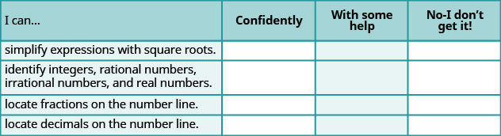
કોષ્ટકમાં 5 પંક્તિ અને 4 સ્તંભ છે. પહેલી પંક્તિ શીર્ષકની છે: “હું કરી શકું છું…”, “આત્મવિશ્વાસથી”, “થોડી મદદથી” અને “ના, મને સમજાતું નથી!” પહેલા સ્તંભમાં “હું કરી શકું છું…” નીચે આ લખાણ છે: “વર્ગમૂળવાળી પદાવલીઓનું સાદું રૂપ આપવું”, “પૂર્ણાંક, સંમેય, અસંમેય અને વાસ્તવિક સંખ્યાઓ ઓળખવી”, “સંખ્યારેખા પર અપૂર્ણાંકો દર્શાવવા” અને “સંખ્યારેખા પર દશાંશ સંખ્યાઓ દર્શાવવી”. બાકીનાં ખાનાં ખાલી છે.
ⓑ માપક્રમ આ માપક્રમ પર ચકાસણીયાદીના તમારા જવાબો ધ્યાનમાં રાખીને આ વિભાગમાં તમારી નિપુણતાને કેટલા ગુણ આપશો? તેમાં સુધારો કેવી રીતે કરશો?
શબ્દાર્થ
સમ દશાંશ સંખ્યાઓ
બે દશાંશ સંખ્યાઓને અપૂર્ણાંકમાં ફેરવતાં સમ અપૂર્ણાંક મળે તો તે દશાંશ સંખ્યાઓ સમ છે.
અસંમેય સંખ્યા
અસંમેય સંખ્યા એ એવી સંખ્યા છે જેને બે પૂર્ણાંકોના ગુણોત્તર તરીકે લખી શકાતી નથી. તેના દશાંશ સ્વરૂપનો અંત આવતો નથી અને આવર્તન પણ થતું નથી.
સંમેય સંખ્યા
સંમેય સંખ્યા આ સ્વરૂપની હોય છે: , જ્યાં p અને q પૂર્ણાંક છે અને છે. સંમેય સંખ્યાને બે પૂર્ણાંકોના ગુણોત્તર તરીકે લખી શકાય છે. તેના દશાંશ સ્વરૂપનો અંત આવે છે અથવા આવર્તન થાય છે.
વર્ગમૂળ ચિહ્ન
વર્ગમૂળચિહ્ન એટલે ચિહ્ન, જે મુખ્ય, એટલે અનઋણ વર્ગમૂળ દર્શાવે છે.
વાસ્તવિક સંખ્યા
વાસ્તવિક સંખ્યા એ એવી સંખ્યા છે જે સંમેય અથવા અસંમેય હોય છે.
વર્ગ અને વર્ગમૂળ
જો હોય, તો એ આ સંખ્યાનો વર્ગ છે: અને એ આ સંખ્યાનું વર્ગમૂળ છે: .